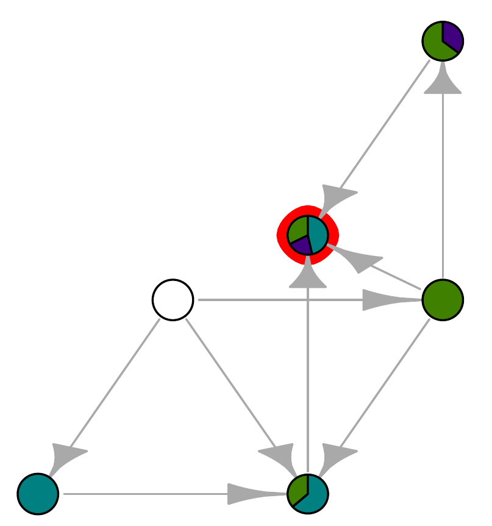

In this paper, we study in detail the structure of the global attractor for the Lotka–Volterra system with a Volterra–Lyapunov stable structural matrix. We consider the invasion graph as recently introduced in Hofbauer and Schreiber (J Math Biol 85:54, 2022) and prove that its edges represent all the heteroclinic connections between the equilibria of the system. We also study the stability of this structure with respect to the perturbation of the problem parameters. This allows us to introduce a definition of structural stability in ecology in coherence with the classical mathematical concept where there exists a detailed geometrical structure, robust under perturbation, that governs the transient and asymptotic dynamics.
This figure should have appeared in the published paper, but it didn’t. A mystery.

The erratum corrects statements, proofs, figures, terminology and numerical values of the published paper. The principal theorem, which identifies the invasion graph with the graph of heteroclinic connections under Volterra-Lyapunov stability of the interaction matrix and hyperbolicity of the equilibria, remains valid. Each correction repairs an argument without changing its conclusion, corrects a worked example or a figure, restricts an auxiliary claim to what its proof establishes, or records the present status of an open question. A self-contained R workflow, embedded in the PDF of the erratum as a ZIP attachment, reproduces every numerical statement. The exact arithmetic on which the corrections rest is stated as sixteen theorems in the Lean file. Each theorem is closed by decide and checked by the kernel of Lean 4.35.0 without an external library, and the command lean AKLS2024_errataChecks.lean returns no output when every theorem is accepted. The dynamical arguments are proved in the text of the erratum and are not formalised in Lean.
@article{Almaraz2024,
title = {Structural Stability of Invasion Graphs for {{Lotka}}--{{Volterra}} Systems},
author = {Almaraz, Pablo and Kalita, Piotr and Langa, Jos\'e A and Soler--Toscano, Fernando},
date = {2024-06-17},
journaltitle = {Journal of Mathematical Biology},
volume = {88},
number = {6},
pages = {64},
doi = {10.1007/s00285-024-02087-8}
}